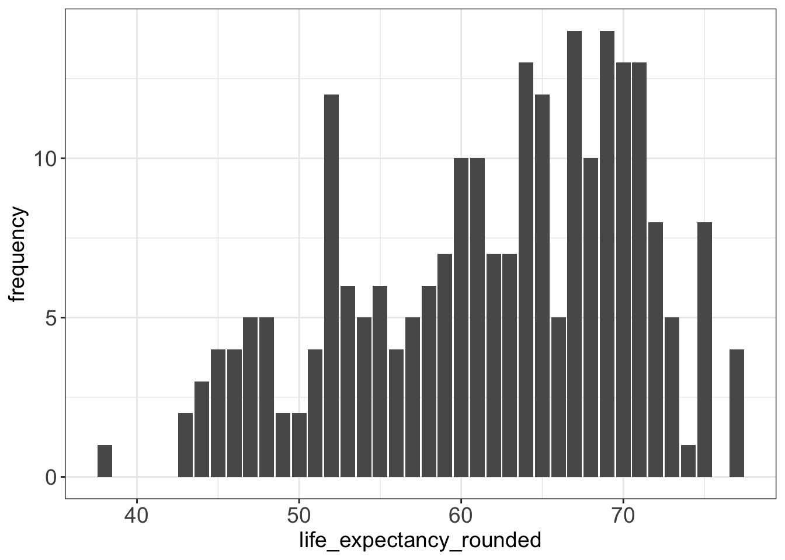
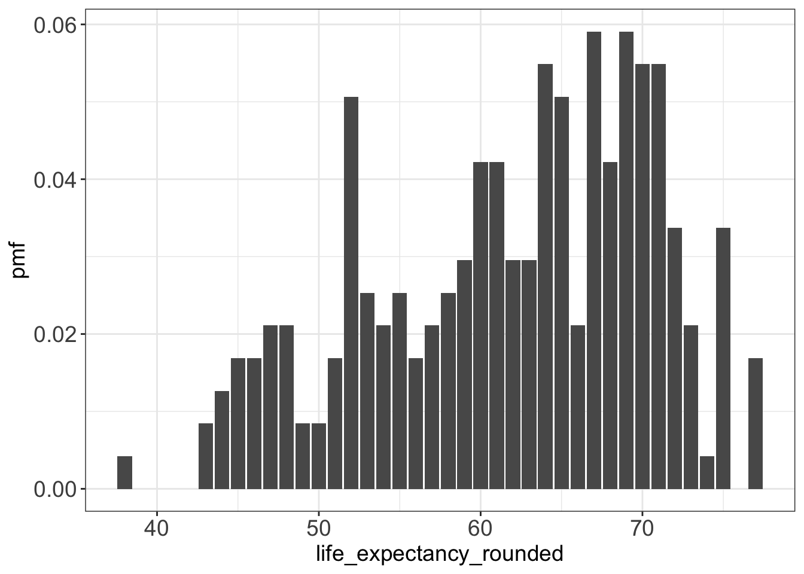
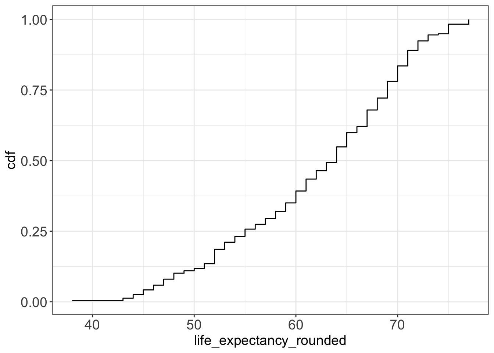

rm(list = ls())
library(dplyr)
library(ggplot2)
library(lemon)
library(tidyverse)Lecture 5 - R Code: Statistics
1 Loading the relevant libraries
Let’s go back to our old dataset: life expectancy. Let’s open it first.
# Setting path
setwd("/Users/bgpopescu/Dropbox/john_cabot/teaching/stats/lecture4-5/")
life_expectancy <- read.csv(file = "./life-expectancy.csv")If you don’t have it anymore, you can download it from the following links:
2 Create averages
The next step is to create averages for all the countries
library(dplyr)
life_expectancy2 <- life_expectancy %>%
group_by(Code, Entity) %>%
summarize(life_expectancy = mean(Life.expectancy.at.birth..historical.))
head(life_expectancy2, n = 5)# A tibble: 5 × 3
# Groups: Code [1]
Code Entity life_expectancy
<chr> <chr> <dbl>
1 "" Africa 49.7
2 "" Americas 66.8
3 "" Asia 59.2
4 "" Europe 69.0
5 "" High-income countries 73.93 Cleaning the data
3.1 Remove countries with no label
life_expectancy3<-subset(life_expectancy2, life_expectancy2$Code!="")
names(life_expectancy3)[1] "Code" "Entity" "life_expectancy"head(life_expectancy3, n=5)# A tibble: 5 × 3
# Groups: Code [5]
Code Entity life_expectancy
<chr> <chr> <dbl>
1 ABW Aruba 70.3
2 AFG Afghanistan 45.4
3 AGO Angola 45.1
4 AIA Anguilla 69.4
5 ALB Albania 68.33.2 Rounding Age
life_expectancy3$life_expectancy_rounded<-round(life_expectancy3$life_expectancy, 0)
life_expectancy4<-data.frame(table(life_expectancy3$life_expectancy_rounded))
head(life_expectancy4, n=5) Var1 Freq
1 38 1
2 43 2
3 44 3
4 45 4
5 46 43.3 Relabelling variables
names(life_expectancy4)[1]<-"life_expectancy_rounded"
names(life_expectancy4)[2]<-"frequency"
head(life_expectancy4, n=5) life_expectancy_rounded frequency
1 38 1
2 43 2
3 44 3
4 45 4
5 46 43.4 Ensuring that variables are numeric
str(life_expectancy4)'data.frame': 35 obs. of 2 variables:
$ life_expectancy_rounded: Factor w/ 35 levels "38","43","44",..: 1 2 3 4 5 6 7 8 9 10 ...
$ frequency : int 1 2 3 4 4 5 5 2 2 4 ...life_expectancy4$life_expectancy_rounded<-as.numeric(as.character(life_expectancy4$life_expectancy_rounded))
str(life_expectancy4)'data.frame': 35 obs. of 2 variables:
$ life_expectancy_rounded: num 38 43 44 45 46 47 48 49 50 51 ...
$ frequency : int 1 2 3 4 4 5 5 2 2 4 ...4 Creating a histogram with age frequencies
figure1<-ggplot(data = life_expectancy4, aes(x=life_expectancy_rounded, y=frequency))+
geom_bar(stat="identity")+
theme_bw()+
theme(axis.text.x = element_text(size=14),
axis.text.y = element_text(size=14),
axis.title=element_text(size=14),
plot.title = element_text(hjust = 0.5))
figure1
ggsave(figure1,
file="./figure1.jpg",
height=20, width=20,
units = "cm", dpi=300)5 Creating the Sum of Frequencies
life_expectancy4$sum_frequency<-sum(life_expectancy4$frequency)
head(life_expectancy4, n=5) life_expectancy_rounded frequency sum_frequency
1 38 1 237
2 43 2 237
3 44 3 237
4 45 4 237
5 46 4 2376 Creating the probability mass function (PMF)
life_expectancy4$pmf<-life_expectancy4$frequency/life_expectancy4$sum_frequency
head(life_expectancy4, n=4) life_expectancy_rounded frequency sum_frequency pmf
1 38 1 237 0.004219409
2 43 2 237 0.008438819
3 44 3 237 0.012658228
4 45 4 237 0.016877637#Note that the PMF needs to sum up to 1.
sum(life_expectancy4$pmf)[1] 17 Plotting the PMFs
figure2<-ggplot(data = life_expectancy4, aes(x=life_expectancy_rounded, y=pmf))+
geom_bar(stat="identity")+
theme_bw()+
theme(axis.text.x = element_text(size=14),
axis.text.y = element_text(size=14),
axis.title=element_text(size=14),
plot.title = element_text(hjust = 0.5))
figure2
ggsave(figure2,
file="./figure2.jpg",
height=20, width=20,
units = "cm", dpi=300)8 Creating a CDF functon
8.1 Step1: Create a list of numbers
t = c(1, 2, 2, 3, 5)
length(t)[1] 58.2 Step2: Create the function which evalutes CDFs
EvalCdf <- function(t, x) {
count = 0.0
for (value in t){
if (value <= x){
count <- count+1
}
}
prob = count / length(t)
return(prob)
}8.3 Step3: Manually evaluating CDF
EvalCdf(t, 0)[1] 0EvalCdf(t, 1)[1] 0.2EvalCdf(t, 2)[1] 0.6EvalCdf(t, 3)[1] 0.8EvalCdf(t, 4)[1] 0.8EvalCdf(t, 5)[1] 1EvalCdf(t, 6)[1] 1EvalCdf(t, 7)[1] 18.4 Step4: Creating a loop and evaluating CDF
list_sequence<-seq(0:5)
list_sequence[1] 1 2 3 4 5 6for (i in list_sequence){
print(EvalCdf(t, i))
}[1] 0.2
[1] 0.6
[1] 0.8
[1] 0.8
[1] 1
[1] 19 Calculating CDFs for the Life Expectancy Dataset
9.1 Step1: Making a list of all the rounded ages
list_all_ages_rounded<-life_expectancy3$life_expectancy_rounded9.2 Step2: Evaluating the CDF and saving it to a list
xsx<-cbind(sapply(life_expectancy4$life_expectancy_rounded, function(x){
EvalCdf(list_all_ages_rounded, x)
}))9.3 Step3: Adding that list to the dataframe
life_expectancy4$cdf <- xsx[,1]9.4 Step4: Making the plot
figure3<-ggplot()+
geom_step(data=life_expectancy4, mapping=aes(x=life_expectancy_rounded, y=cdf)) +
geom_bar(stat="identity")+
theme_bw()+
theme(axis.text.x = element_text(size=14),
axis.text.y = element_text(size=14),
axis.title=element_text(size=14),
plot.title = element_text(hjust = 0.5))
figure3
ggsave(figure3,
file="./figure3.jpg",
height=20, width=20,
units = "cm", dpi=300)